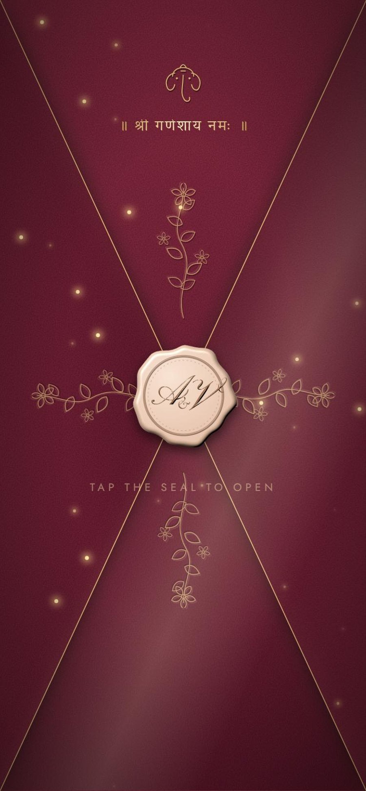
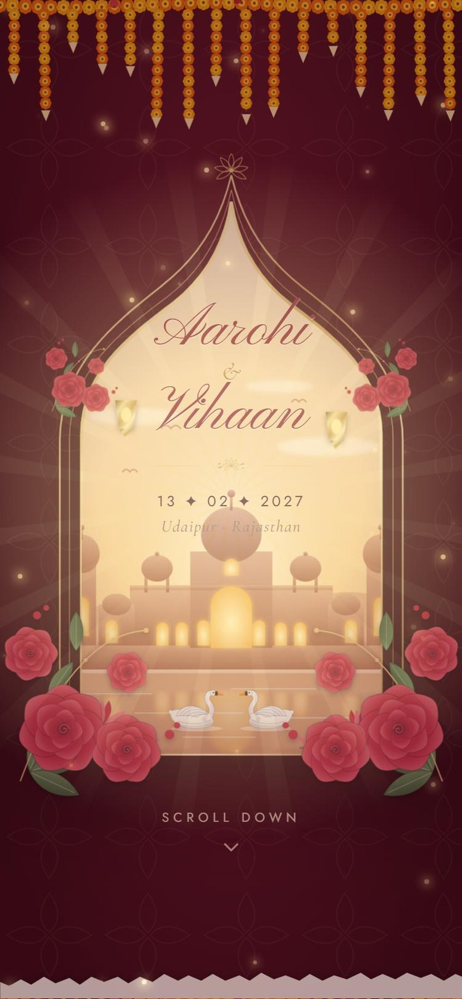
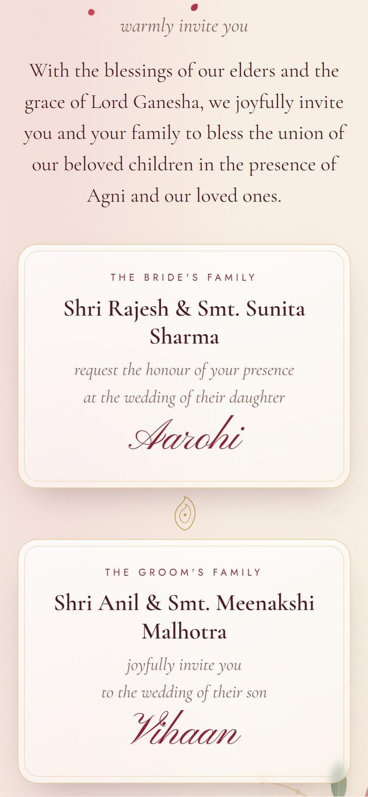
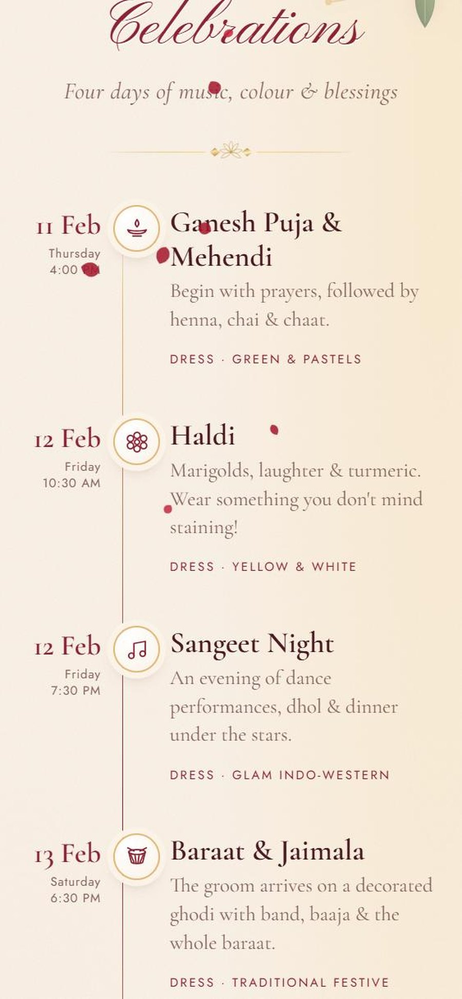
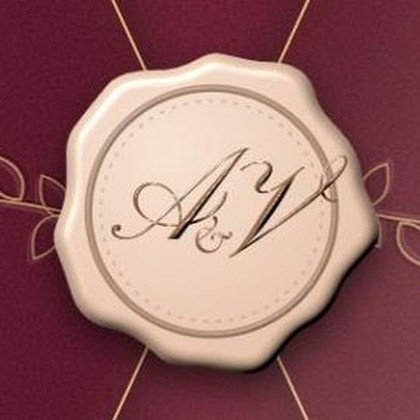

They met
in Udaipur.
One seat left
on the last boat.
“Is this seat taken?”
“Not anymore.”
And that was
the beginning.
The years
went by.
2024He met her family
2025A ring, and a yes
2027The wedding




So they sent
an invitation.
Tap the seal to open
Their names,
in gold.
Blessed by
both families.
A live countdown
to the big day.
Every ceremony,
every detail.

Wedding Invitation Website
Your wedding,
opened like a
sealed envelope.
Hindu · Sikh · Muslim · Christian
Photos · Countdown · Map · Calendar
Link in bio
made with iloveeefriez